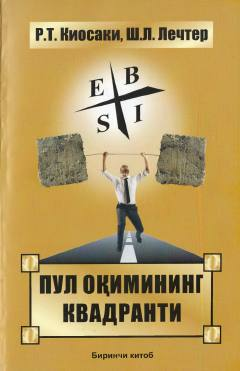

POMoliyaviy erkinlikka erishish va pul oqimini boshqarish sirlarini o'rganing.
Mazkur kitob muallifning mashhur «Boy ota, kambag'al ota» asarining mantiqiy davomi bo'lib, moliyaviy erkinlikka erishish sirlarini ochib beradi. Pul oqimi kvadranti orqali insonlarning daromad topish usullari va to'rt xil toifasi tushuntirilgan. Kitob o'quvchilarga pul uchun emas, balki pul ularning manfaati uchun xizmat qilishini o'rgatadi.